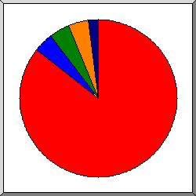
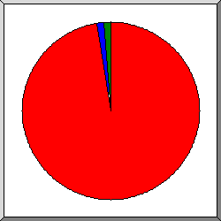
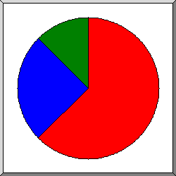
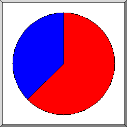
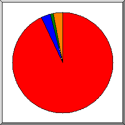
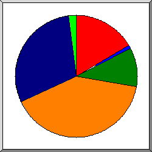
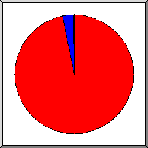

Web Server Ýstatistikleri: dergidunyasi.com.tr
Web Server Ýstatistikleri: dergidunyasi.com.tr
Program baþlagýcý: Prþ,04-May-2023 15:30.
Analiz edilen tarih aralýðý: Sal,25-Nis-2023 23:16 / Prþ,04-May-2023 12:34 (8.55 gün).
Web Server Ýstatistikleri: dergidunyasi.com.trProgram baþlagýcý: Prþ,04-May-2023 15:30.
Analiz edilen tarih aralýðý: Sal,25-Nis-2023 23:16 / Prþ,04-May-2023 12:34 (8.55 gün).
(Git: Ýlk Sayfa | Genel Özet | Aylýk Rapor | Günlük Özet | Saatlik Özet | Site Tipi Raporu | Organizasyon Raporu | Gönderici Site Raporu | Kullanýlan Browser Raporu | Kullanýlan Browserlar Özeti | Ýþletim Sistemi Raporu | Durum Kodu Raporu | Dosya Boyutu Raporu | Dosya Tipi Raporu | Dizin Raporu | Eriþim Raporu)
Parantez içindeki deðerlerin temsil ettiði gün sayýsý: 7 gün-bitiþ: 04-May-2023 15:30.
Baþarýlý eriþimler: 97 (40)
Baþarýlý eriþimler günlük ortalamasý : 11 (5)
Sayfalara yapýlan baþarýlý eriþimler: 16 (5)
Sayfalara yapýlan baþarýlý eriþimler günlük ortalamasý: 1 (0)
Baþarýsýz eriþimler: 3 (3)
Eriþilen belirgin dosya sayýsý: 46 (46)
Servis verilen belirgin host sayýsý: 6 (6)
Transfer edilen bilgi: 10.93 megabytes (4.73 megabytes )
Transfer edilen bilgi günlük ortalamasý: 1.28 megabytes (691.84 kilobytes )
(Git: Ýlk Sayfa | Genel Özet | Aylýk Rapor | Günlük Özet | Saatlik Özet | Site Tipi Raporu | Organizasyon Raporu | Gönderici Site Raporu | Kullanýlan Browser Raporu | Kullanýlan Browserlar Özeti | Ýþletim Sistemi Raporu | Durum Kodu Raporu | Dosya Boyutu Raporu | Dosya Tipi Raporu | Dizin Raporu | Eriþim Raporu)
Herbir ünite ( ) sayfaya 1 kez eriþimi gösterir.
) sayfaya 1 kez eriþimi gösterir.
| ay | eriþim | sayfa | |
|---|---|---|---|
| Nis 2023 | 57 | 11 |   |
| May 2023 | 40 | 5 |  |
En meþgul ay: Nis 2023 (11 kez eriþimi gösterir).
(Git: Ýlk Sayfa | Genel Özet | Aylýk Rapor | Günlük Özet | Saatlik Özet | Site Tipi Raporu | Organizasyon Raporu | Gönderici Site Raporu | Kullanýlan Browser Raporu | Kullanýlan Browserlar Özeti | Ýþletim Sistemi Raporu | Durum Kodu Raporu | Dosya Boyutu Raporu | Dosya Tipi Raporu | Dizin Raporu | Eriþim Raporu)
Herbir ünite () sayfaya 1 kez eriþimi gösterir.
| gün | eriþim | sayfa | |
|---|---|---|---|
| Paz | 0 | 0 | |
| Pts | 0 | 0 | |
| Sal | 2 | 2 | |
| Çrþ | 55 | 9 | |
| Prþ | 40 | 5 | |
| Cum | 0 | 0 | |
| Cts | 0 | 0 |
(Git: Ýlk Sayfa | Genel Özet | Aylýk Rapor | Günlük Özet | Saatlik Özet | Site Tipi Raporu | Organizasyon Raporu | Gönderici Site Raporu | Kullanýlan Browser Raporu | Kullanýlan Browserlar Özeti | Ýþletim Sistemi Raporu | Durum Kodu Raporu | Dosya Boyutu Raporu | Dosya Tipi Raporu | Dizin Raporu | Eriþim Raporu)
Herbir ünite () sayfaya 1 kez eriþimi gösterir.
| sa | eriþim | sayfa | |
|---|---|---|---|
| 0 | 0 | 0 | |
| 1 | 0 | 0 | |
| 2 | 0 | 0 | |
| 3 | 0 | 0 | |
| 4 | 47 | 1 | |
| 5 | 0 | 0 | |
| 6 | 0 | 0 | |
| 7 | 0 | 0 | |
| 8 | 0 | 0 | |
| 9 | 36 | 1 | |
| 10 | 0 | 0 | |
| 11 | 0 | 0 | |
| 12 | 5 | 5 | |
| 13 | 1 | 1 | |
| 14 | 1 | 1 | |
| 15 | 3 | 3 | |
| 16 | 0 | 0 | |
| 17 | 1 | 1 | |
| 18 | 1 | 1 | |
| 19 | 0 | 0 | |
| 20 | 0 | 0 | |
| 21 | 0 | 0 | |
| 22 | 0 | 0 | |
| 23 | 2 | 2 | |
(Git: Ýlk Sayfa | Genel Özet | Aylýk Rapor | Günlük Özet | Saatlik Özet | Site Tipi Raporu | Organizasyon Raporu | Gönderici Site Raporu | Kullanýlan Browser Raporu | Kullanýlan Browserlar Özeti | Ýþletim Sistemi Raporu | Durum Kodu Raporu | Dosya Boyutu Raporu | Dosya Tipi Raporu | Dizin Raporu | Eriþim Raporu)
site tipleri listeleniyor, Sýralama: eriþim miktarý.
| eriþim | bytes% | site tipi |
|---|---|---|
| 97 | 100% | [Çözümlenmemiþ sayýsal adres] |
(Git: Ýlk Sayfa | Genel Özet | Aylýk Rapor | Günlük Özet | Saatlik Özet | Site Tipi Raporu | Organizasyon Raporu | Gönderici Site Raporu | Kullanýlan Browser Raporu | Kullanýlan Browserlar Özeti | Ýþletim Sistemi Raporu | Durum Kodu Raporu | Dosya Boyutu Raporu | Dosya Tipi Raporu | Dizin Raporu | Eriþim Raporu)

Dilimlerin temsil ettiði büyüklük: eriþim sayýsý.
 78
78
 13
13
 40
40
 144.91
144.91
 20
20
organizasyonlar listeleniyor, Sýralama: eriþim sayýsý.
| eriþim | bytes% | organizasyon |
|---|---|---|
| 83 | 97.33% | 78 |
| 4 | 0.75% | 13 |
| 4 | 0.75% | 40 |
| 4 | 0.79% | 144.91 |
| 2 | 0.38% | 20 |
(Git: Ýlk Sayfa | Genel Özet | Aylýk Rapor | Günlük Özet | Saatlik Özet | Site Tipi Raporu | Organizasyon Raporu | Gönderici Site Raporu | Kullanýlan Browser Raporu | Kullanýlan Browserlar Özeti | Ýþletim Sistemi Raporu | Durum Kodu Raporu | Dosya Boyutu Raporu | Dosya Tipi Raporu | Dizin Raporu | Eriþim Raporu)

Dilimlerin temsil ettiði büyüklük: eriþim sayýsý.
https://dergidunyasi.com.tr/
http://www.dergidunyasi.com.tr/
http://dergidunyasi.com.tr/
gönderici siteler listeleniyor, Sýralama: eriþim sayýsý.
| eriþim | site |
|---|---|
| 81 | https://dergidunyasi.com.tr/ |
| 1 | http://www.dergidunyasi.com.tr/ |
| 1 | http://dergidunyasi.com.tr/ |
(Git: Ýlk Sayfa | Genel Özet | Aylýk Rapor | Günlük Özet | Saatlik Özet | Site Tipi Raporu | Organizasyon Raporu | Gönderici Site Raporu | Kullanýlan Browser Raporu | Kullanýlan Browserlar Özeti | Ýþletim Sistemi Raporu | Durum Kodu Raporu | Dosya Boyutu Raporu | Dosya Tipi Raporu | Dizin Raporu | Eriþim Raporu)

Dilimlerin temsil ettiði büyüklük: sayfa eriþim sayýsý.
Go-http-client/1.1
Mozilla/5.0 (X11; Linux x86_64) AppleWebKit/537.36 (KHTML, like Gecko) Chrome/89.0.4389.82 Safari/537.36
Mozilla/5.0 (Linux; Android 12; 2201117TG) AppleWebKit/537.36 (KHTML, like Gecko) Chrome/112.0.0.0 Mobile Safari/537.36
Browserlar listeleniyor - en az 1 kez eriþimi gösterir, Sýralama: sayfa eriþim sayýsý.
| eriþim | sayfa | browser |
|---|---|---|
| 10 | 10 | Go-http-client/1.1 |
| 4 | 4 | Mozilla/5.0 (X11; Linux x86_64) AppleWebKit/537.36 (KHTML, like Gecko) Chrome/89.0.4389.82 Safari/537.36 |
| 83 | 2 | Mozilla/5.0 (Linux; Android 12; 2201117TG) AppleWebKit/537.36 (KHTML, like Gecko) Chrome/112.0.0.0 Mobile Safari/537.36 |
(Git: Ýlk Sayfa | Genel Özet | Aylýk Rapor | Günlük Özet | Saatlik Özet | Site Tipi Raporu | Organizasyon Raporu | Gönderici Site Raporu | Kullanýlan Browser Raporu | Kullanýlan Browserlar Özeti | Ýþletim Sistemi Raporu | Durum Kodu Raporu | Dosya Boyutu Raporu | Dosya Tipi Raporu | Dizin Raporu | Eriþim Raporu)

Dilimlerin temsil ettiði büyüklük: sayfa eriþim sayýsý.
Go-http-client
Safari
browserlar listeleniyor - en az 1 kez eriþimi gösterir, Sýralama: sayfa eriþim sayýsý.
| no. | eriþim | sayfa | browser |
|---|---|---|---|
| 1 | 10 | 10 | Go-http-client |
| 10 | 10 | Go-http-client/1 | |
| 2 | 87 | 6 | Safari |
| 87 | 6 | Safari/537 |
(Git: Ýlk Sayfa | Genel Özet | Aylýk Rapor | Günlük Özet | Saatlik Özet | Site Tipi Raporu | Organizasyon Raporu | Gönderici Site Raporu | Kullanýlan Browser Raporu | Kullanýlan Browserlar Özeti | Ýþletim Sistemi Raporu | Durum Kodu Raporu | Dosya Boyutu Raporu | Dosya Tipi Raporu | Dizin Raporu | Eriþim Raporu)

Dilimlerin temsil ettiði büyüklük: sayfa eriþim sayýsý.
iþletim sistemi bilinmiyor
Unix
iþlerim sistemleri listeleniyor, Sýralama: sayfa eriþim sayýsý.
| no. | eriþim | sayfa | sistem |
|---|---|---|---|
| 1 | 10 | 10 | iþletim sistemi bilinmiyor |
| 2 | 87 | 6 | Unix |
| 87 | 6 | Linux |
(Git: Ýlk Sayfa | Genel Özet | Aylýk Rapor | Günlük Özet | Saatlik Özet | Site Tipi Raporu | Organizasyon Raporu | Gönderici Site Raporu | Kullanýlan Browser Raporu | Kullanýlan Browserlar Özeti | Ýþletim Sistemi Raporu | Durum Kodu Raporu | Dosya Boyutu Raporu | Dosya Tipi Raporu | Dizin Raporu | Eriþim Raporu)

Dilimlerin temsil ettiði büyüklük: eriþim sayýsý.
200 OK
204 OK, but nothing to send
304 Not modified since last retrieval
500 Internal server error
durum kodlarý listeleniyor, Numara sýralý.
| eriþim | durum kodu |
|---|---|
| 93 | 200 OK |
| 3 | 204 OK, but nothing to send |
| 1 | 304 Not modified since last retrieval |
| 3 | 500 Internal server error |
(Git: Ýlk Sayfa | Genel Özet | Aylýk Rapor | Günlük Özet | Saatlik Özet | Site Tipi Raporu | Organizasyon Raporu | Gönderici Site Raporu | Kullanýlan Browser Raporu | Kullanýlan Browserlar Özeti | Ýþletim Sistemi Raporu | Durum Kodu Raporu | Dosya Boyutu Raporu | Dosya Tipi Raporu | Dizin Raporu | Eriþim Raporu)

Dilimlerin temsil ettiði büyüklük: eriþim sayýsý.
0
11B- 100B
1kB- 10kB
10kB-100kB
100kB- 1MB
 1MB- 10MB
1MB- 10MB
| boyut | eriþim | bytes% |
|---|---|---|
| 0 | 16 | |
| 1B- 10B | 0 | |
| 11B- 100B | 1 | |
| 101B- 1kB | 0 | |
| 1kB- 10kB | 10 | 0.33% |
| 10kB-100kB | 39 | 16.33% |
| 100kB- 1MB | 29 | 58.88% |
| 1MB- 10MB | 2 | 24.46% |
(Git: Ýlk Sayfa | Genel Özet | Aylýk Rapor | Günlük Özet | Saatlik Özet | Site Tipi Raporu | Organizasyon Raporu | Gönderici Site Raporu | Kullanýlan Browser Raporu | Kullanýlan Browserlar Özeti | Ýþletim Sistemi Raporu | Durum Kodu Raporu | Dosya Boyutu Raporu | Dosya Tipi Raporu | Dizin Raporu | Eriþim Raporu)

Dilimlerin temsil ettiði büyüklük: eriþim miktarý.
.jpg [JPEG graphics]
.js [JavaScript code]
.css [Cascading Style Sheets]
[Dizinler]
.webp
.woff2
 .png [PNG graphics]
.png [PNG graphics]
dosya tipleri listeleniyor - en az 0.1% trafiði olan, Sýralama: eriþim miktarý.
| eriþim | bytes% | dosya uzantýsý |
|---|---|---|
| 38 | 53.65% | .jpg [JPEG graphics] |
| 4 | 26.05% | .js [JavaScript code] |
| 6 | 11.76% | .css [Cascading Style Sheets] |
| 16 | 3.09% | [Dizinler] |
| 4 | 2.19% | .webp |
| 2 | 1.69% | .woff2 |
| 9 | 1.51% | .png [PNG graphics] |
| 18 | 0.05% | [not listed: 1 dosya uzantýsý] |
(Git: Ýlk Sayfa | Genel Özet | Aylýk Rapor | Günlük Özet | Saatlik Özet | Site Tipi Raporu | Organizasyon Raporu | Gönderici Site Raporu | Kullanýlan Browser Raporu | Kullanýlan Browserlar Özeti | Ýþletim Sistemi Raporu | Durum Kodu Raporu | Dosya Boyutu Raporu | Dosya Tipi Raporu | Dizin Raporu | Eriþim Raporu)

Dilimlerin temsil ettiði büyüklük: eriþim miktarý.
/public/
[Ana dizin]
Dizinler listeleniyor - en az 0.01% trafiði olan, Sýralama: eriþim miktarý.
| eriþim | bytes% | bölüm |
|---|---|---|
| 63 | 96.86% | /public/ |
| 19 | 3.09% | [Ana dizin] |
| 15 | 0.05% | /home/ |
(Git: Ýlk Sayfa | Genel Özet | Aylýk Rapor | Günlük Özet | Saatlik Özet | Site Tipi Raporu | Organizasyon Raporu | Gönderici Site Raporu | Kullanýlan Browser Raporu | Kullanýlan Browserlar Özeti | Ýþletim Sistemi Raporu | Durum Kodu Raporu | Dosya Boyutu Raporu | Dosya Tipi Raporu | Dizin Raporu | Eriþim Raporu)
dosyalar listeleniyor - en az 20 eriþim, Sýralama: eriþim sayýsý.
| eriþim | bytes% | son saat | dosya |
|---|---|---|---|
| 97 | 100% | 4/May/23 12:34 | [not listed: 45 dosyalar] |